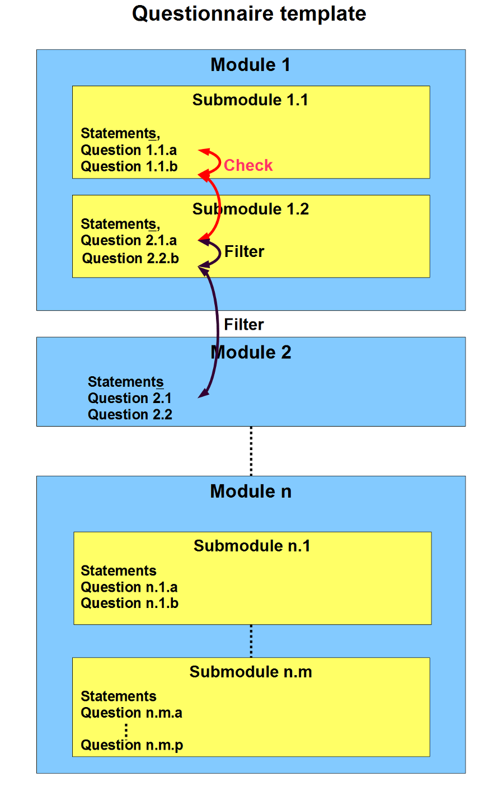

Purpose of the document: Define good practice for modelling statistical survey questionnaires using the DDI standard.
Creation and update
| Version | Date | Contributors | Purpose of the update |
| 0.1 | 13/02/2014 | T. Dubois & G. Duffes | Creation |
| 0.8 | 15/04/2016 | T. Dubois & G. Duffes | Questions updated |
| 0.9 | 28/07/2016 | T. Dubois & G. Duffes | Terminology updated |
| 1.0 | 28/07/2016 | T. Dubois & G. Duffes | English translation |
Status
| Version number | Date | Approval |
The questionnaire metamodel is comprised of description of the metadata necessary for constituting the questionnaire template: questions, variables, code lists, statements (instructions, help, comments, warnings) as well as the statement and question grouping and flow (question blocks), filtering and controls. This description will be based on the XML DDI (Data Description Initiative) metamodel version 3.2.
It is assumed below that all the XML-based DDI objects are identifiable, maintainable and versionable under the guise of a mandatory triple as follows (example):
In order to reduce the verbosity of the XML code which could impair its readability, the above-mentioned triple is not repeated in the following examples, it is implicit.
Furthermore the XML chunks used in the examples, taken individually, are not syntactically valid and are for illustrative purposes only.
This document is a guide to good pratices for modelling statistical questionnaires using DDI. The point is to make explicit the top (or mid)-level business object representation in DDI constituting a questionnaire. It does not give any detail on the DDI objects used, information provided by a DDI profile, to which the reader could refer if necessary.
Figure showing the logical structure of a questionnaire template:
Text layout
Some DDI elements allow to use XHTML markups to format text (<Text> and <Content> elements). It is recommended to use only a couple of cursory elements such as the XHTML markups « underline », « bold » and « italics » as well as references to explanatory notes which are represented as footnotes in desktop tools.
A questionnaire template is the sequencing of modules. It also includes the questionnaire logic (including filtering) and coherence controls. A questionnaire template is a survey instrument related to a specific thematic issue.
Questionnaire means that a questionnaire template is customised at the surveyed unit level. It is a concrete human-readable (interviewer or interviewee) representation of the questionnaire shown to a respondent. It can be either the prefilling of the principal activity of a business or the number of employees already known by the statistical institute in the case of a business survey.
The box below lists the DDI elements which describe a questionnaire template:
The StudyUnit is the top element representing a statistical operation and one to many DataCollection is associated with a data collection campaign.
Each DataCollection elements contains information on the data collection activities during a data collection campaign among which are the survey instruments. It contains a reference to the survey instrument component banks stored in the resource packages:
A reference to a question bank used by the survey instrument(s) (DDI QuestionScheme);
A reference to a control construct bank (DDI ControlConstructScheme);
A reference to a statement bank (DDI InterviewerInstructionScheme).
All the object banks referenced in the DataCollection, also known as « Schemes », are stored and maintained in packages, called ResourcePackage (see the box below):
Each ResourcePackage contains an object type which has specific functions in the questionnaire, some of them are made explicit in the examples below.
A module is a level-“1”-of-depth sequence. It is a sub-theme of the thematic issue. A module is made of a title and can contain the sequencing of sub-modules. For instance the Business Outlook Survey among households distinguishes the module « Business Outlook » from the module « sociodemographic », etc.
A module is represented by a DDI sequence, which references one or more constructs.
It is characterised as a module through an element Type of Sequence (TypeOfSequence) which takes the value « Module » from a controlled vocabulary1 (a codelist) delimiting the range of values allowed for describing the business parts of the questionnaire. This process is known as typing the sequence. The title of the module is the sequence label.
A sub-module breaks down a module into a title and a sequencing of statements and questions. It is the finest semantic grouping of statements and questions.
A Statement is a generic term that designates a textual element from the questionnaire (other than the question text, response modalities…).
The different types of statement are: comment, instruction, help, or warning.
A comment is a statement which conveys quite a « generic » information on the context without interaction with the interviewee/interviewer. It is an introductory text preceding one or more questions generally.
Example: «We are going to move on to the questions on the computer and internet access equipment in your household».
An instruction is a formal step to be completed by the interviewee/interviewer.
For instance: « Enter 0 if your business has not incurred any innovation expense. » or « Check off all appropriate boxes. ».
DDI is a little bit “twisted” with the use of the element InstructionName for typing the instruction.
A help is a statement that enhances the understanding of a question and its expected response.
Example: « Include non-salary employees.»
A warning is a message alerting the interviewee an error occurred or an error can potentially occur (a sort of cautionary statement).
For instance: « The sum of the respective turnover is not equal to the total turnover. Please correct it.»
A message which appears when a cursor is positioned over an icon, image, hyperlink, or other element in the graphical user interface. It took over from the “footnote” type implemented in the early Eno versions. Those messages are culled from an instruction booklet essentially. Although this type of statement is mainly representational, its content is in most of the cases an instruction.
It is implemented in several elements, however in two different ways to make up for a DDI shortfall in the <Category> that misses an instruction reference feature:
Eno has chosen the following icon, however this depends on the Eno implementing environment totally:
Since the tooltip is an instruction semantically, its “type” segment in the ID is “II”.
Case 1: Question text
The first case below shows the “usual” and “correct” implementation in a <QuestionItem>.
Case 2: Category in a grid
The category which contains the tooltip reference is used à the row stub in a table.
Case 1: Question text
Case 2: Category in a grid

A conditional statement is either a comment, or an instruction, or an help or a warning with a value determined by one or more responses to questions from the survey instrument.
The condition for displaying a text is expressed within a command contained in a <d:ConditionalText> element. DDI does not handle currently the link between a text to be displayed and its related condition: the assumption is made that the text expressed in the <d:LiteralText> follows its condition within the sequence of DDI elements2.
If the variable VAR take the value of 7 then the statement text is as follows:
« Your inadequate knowledge of the Simpsons does not allow to continue the questionnaire. »
Otherwise nothing is displayed.
A question bank is simply a set of questions which can take various forms from a business point of view. A non-exhaustive set of question types identified through the statistical surveys is presented below.
A question bank is represented by a DDI QuestionScheme which can contain four DDI object types: QuestionItem, QuestionGrid, QuestionBlock and QuestionGroup.
The QuestionBlock and QuestionGroup are not addressed in this version of the document.
The classification of question types has been reviewed several times and the current proposal remains a moot point. It would be of great interest to define a common vocabulary at the European Statistical System level in order to move towards shared tools and documentation.
A question with a « single response domain » is a question made of a label and only one response domain whichever its type be: text, numeric, date, boolean, or less frequently any type available in the DDI schemas.
It is represented as a DDI QuestionItem.
The representation associated with the above modelling is as follows:
⇒ How much is Margaret at checkout?
A so-called question with « a multiple response domain » is a question made of a label and several response domains typed mainly as text, numeric, date, boolean, less frequently any type available in the DDI schemas. Each of these response domains can be preceded by a label and those labels taken as a whole are not an information axis and can respectively be of different types (text, numeric, date, boolean, etc.).
In most statistical questionnaires these labels are an information axis. The tendency would then be to add a column header which leads to the two-dimension grid representation (cf. § 3.2.5 - Table). The case 2 (Table – numeric answers) is a good illustration.
It is a DDI QuestionItem with various types of response domain nested in a multiple response domain <ResponseDomainInMixed> contained itself -along with the other response domains- in a <StructuredMixedResponseDomain>. Each response domain (<TextDomain> in the following example) contains a certain number of elements such as <r :label> which allows to add a label to the response (« house number» in the following example).
It should be noted that the DDI response format is also included in the representation of the out parameter from the response domain.
The representation associated with the DDI modelling is as follows:
| ⇒ What are Jay's postal details? | |
| House number | |
| Street | |
| City | |
A question with a single response domain is a question made of a label and a response domain typed as a code list. This type of question allows the respondent to select one single response from a predefined list.
It is a QuestionItem which has as a response domain a <CodeDomain> with the following content model elements:
Case 1: Radio Button
Case 2: Drop-down box
The representation associated with the DDI modelling is as follows:
Case 1: Radio Button
⇒ Did you enjoy the movie?
YesCase 2: Drop-down box
⇒ What is the year of the first broadcast?
A multiple choice question is a question whose label is the mutual part of several sub-questions (constituting a coherent whole i.e. an information axis). Each modality of the information axis is peculiar to a specific response domain. This type of question allows the respondent to select the best possible answers out of a number of choices from a predefined list.
A multiple choice question defines only one dimension since the second axis represented is not a « true » dimension (i.e an information axis) but rather a response domain (for instance a boolean response domain or a « Yes/No » code domain).
It is represented by a DDI QuestionGrid:
Each <CodeDomain> has a reference to the code list that represents it as well as a <GenericOutputFormat> that types the code list representing the response domain.
It should be noted that the format of the DDI response is also contained in the out parameter representation defined at the beginning of the question.
In the example given in §3.5.2 Graphical Representation, a QuestionGrid has an element <CodeDomain> that references a code list « Yes/No » (represented as radio buttons).
⇒ Design choice: in this case we chose to define a variable that is measured for each modality of the information axis.
An alternative would have been to use vectors of variables allowing to capture the response list corresponding to all the chosen modalities of the information axis. This solution was rejected essentially for technical implementation reasons. Although the DDI QuestionGrid element is used, this use case is not classified as a table (3.2.5.Table). This means that DDI has nothing strictly equivalent to what is known as a Table by subject-matter people.
The representation associated with the DDI modelling is as follows:
| ⇒ Do you like the following ice cream flavours? | ||
| Vanilla | Yes | No |
| Strawberry | Yes | No |
| Apple | Yes | No |
| Bacon | Yes | No |
An alternative representation would be as follows, however the DDI modelling and the business objects would remain the same (the columns yes-no are the response fields associated with each row and not an information axis).
| ⇒ Do you like the following ice cream flavours? | Yes | No |
| Vanilla | ||
| Strawberry | ||
| Apple | ||
| Bacon |
This example could have been represented by check boxes instead of radio buttons yes/no. In this case, only the response domain is different.
A Table is a two-way table. It is a question made of a label and a response domain defined by two dimensions. The information located at the intersection of a row and a column corresponds to a response.
There are a lot of types of tables, more or less equivalent from a semantic point of view, however their representations can be very varied. The main purpose here is to describe different use cases relevant to the survey designer, and provide a DDI modelling.
One dimension versus two dimensions
This is a semantic distinction not a representational one.
Further to the choice made in the paragraph 3.2.4 (no vector), a two-dimension table is a table where each row-column modality intersection corresponds to a variable that is measured.
In the case of a “fake” one-dimension table, what could be interpreted as a dimension, is only the list of the response modalities for each row (please see the second representation in 3.2.4).
For instance, in the Case 1: Table – boolean responses, the modes of transport and the geographic areas are “real” information axis that are intersected each other. Two DDI dimensions are then defined, one for the modes of transport, the other for the geographic areas. Each cell corresponds to a measured variable.
On the other hand in the use case in the paragraph 3.2.4. Multiple choice question, the code list « Yes/No » is a simple response field for each modality of the dimension related to the question: in this example, a list of ice cream flavours is given to the discretion of the respondent. There will be only one dimension and the code list « Yes/No » will be part of the response domain(CodeDomain). Each line is a measured variable.
A two-way table with two explicit information axis is a table with two dimensions whose modalities are already known.
It is a QuestionGrid with two dimensions and a response field associated with the intersection of each modality of each dimension, as opposed to the QuestionGrid with only one dimension according to the rule mentioned in the text box « One dimension versus two dimensions ».
The representation of the out parameters in the question was voluntarily left out, for XML verbosity purposes, the one of the out parameters in the response domain was only given once (to learn more about the value representation in the <ResponseDomain>, please see § 3.7.1.Response domains).
In the DDI below, we chose as an example a check-off response domain (DDI NominalDomain) for each intersection of the two dimensions. The entire table is akin to a question with several possible response modalities where each response modality takes its meaning from the intersection of information axis. The reasoning remains the same when each intersection defines a single choice response (radio button yes-no), only the type of the response domain changes (CodeDomain in this case).
The representation associated with the DDI modelling is as follows:
| ⇒ Which of the following forms of transport were used by the hero and in which country? | ||||||
| Several answers possible: check off all the relevant boxes | ||||||
| Brazil | Canada | Japan | France | Other country | Other planet | |
| Car | ||||||
| Bike | ||||||
| Skateboard | ||||||
The use case 2 presented below is equivalent from the DDI point of view to the case 1 contrary to what the representation suggests.
The difference, as opposed to the case 1, is as follows:
It should be noted that the column headers and the row stubs are defined as follows:
The representation associated with the DDI modelling is as follows:
| ⇒ Please estimate the expenses at the mini-market? | |
| Products | Amount |
| Ice cream | $ |
| Candies | $ |
| T-Bone | $ |
| Donut | $ |
| Total expenses | $ |
We don't know (yet?) how to model properly the grid below:
| ⇒ Please break down the total salaries by occupation category: | ||||
| Occupation categories |
Code | Description of the job | Gross monthly salary in April |
|
| Occupation label | Coefficient | |||
| Workers | 1 | Snowplough operator | 170 | |
| 2 | Public transport drivers | 200 | ||
| Employees | 1 | Government employees | 270 | |
| 2 | Supervisory staff | 280 | ||
| Managers | 1 | Primary school teacher | 290 | |
| 2 | Research and development technician | 300 | ||
Only the information necessary to identify a cell (box, intersection) in a table can be represented in the DDI grids. Here the column « Monthly gross salary » is the second dimension. The first dimension (row) corresponds to one and only one lowest-level element chosen here among the code, the occupation label or the coefficient. The remaining two (out of three) are only additional and descriptive information that is not possible to represent in the table currently.
Remark: if the code/job label pair were a subset of a real classification (such as the European NACE), this information could have been modelled in the QuestionGrid. It is not the case here, since the same code (e.g. 1) is used with distinct labels.
The code list that represents the first dimension (rows) is hierarchical. Let's assume from what precedes that only the occupation label is kept. Then the codes associated with the categories “Workers”, “Employees” and “Managers” have their attributes “levelNumber” set to “1” and “isDiscrete” to “false”. The codes associated with the other occupational categories (“occupation label”) are nested within their respective parent node (e.g. the one for “Supervisory statt” is nested in “Employees” code) its attribute “levelNumber” is set to “2” and “isDiscrete” to “true”
In addition to the present hierarchical code list represented on the first two columns the label “Code” can not be modelled correctly (only one label of code list is allowed regardless of the level). The issue is being discussed with the DDI Alliance.
A two-way table with an implicit information axis is a table where the modalities of one out of the two dimensions is not known a priori (e.g. a table that lists individuals in a household).
Tables without row stubs are represented by a DDI QuestionGrid including a « Roster » dimension which allows to define a minimum and maximum number of rows.
Different business rules are implemented in Eno:
New rules could be added to Eno, two would be of interest particularly:
|
⇒ Please indicate the presents purchased at Itchy and Scratchy and their cost: |
|
| Label | Cost |
There are two types of DDI response domains:
It should be noted that the numeric response domain can be subtyped through the <NumericTypeCode> element which takes meaning from an external controlled vocabulary.
Here is below an example of a ManagedNumericRepresentation referenced in a QuestionItem.
Any of the response domains defined in the previous examples can be an illustration of the use of a Managed*Representation.
A conditional question is a question with a conditional text parametrised by the responses to one or more questions from the instrument.
The condition for displaying a text is expressed within a command contained in a <d:ConditionalText> element. DDI does not handle currently the link between a text to be displayed and its related condition: the assumption is made that the text expressed in the <d:LiteralText> follows its condition within the sequence of DDI elements3.
If the variable VAR takes the value of 2 then the question text is as follows:
⇒ After his dismissal did Homer seek advice of any public body?
If the variable VAR takes the value of 1 or 3, then the question text is as follows:
⇒ After his dismissal did Homer get in touch with Employment Agency?
The parameter flow principle especially in the case of filtering, conditional text (question, instruction or categories), derived variables or computation items is described in annex to the DDI 3.2 specification. It is recommended to track the parameter value at each step of the DDI questionnaire flow. An illustration provided by Wendy Thomas is given below.

The path followed by the parameter values is as follows: QI1 → RD → QC1 → SEQ → QC2 → QI2, if the assumption is made that the QuestionConstruct and the IfThenElse are nested in a mutual Sequence (otherwise an extra element layer should be added: <r:binding> and <r:Outparameter>/<r:Inparameter>).
Insee has adopted a simplified version of it which links directly the parameters from the response domains to the question objects that take these parameters as inputs, e.g: QI1 → RD1 → QI2.
A filter question is a particular type of question in a questionnaire. Its purpose is to target a segment of the statistical population and drive it to specific branches of the questionnaire tree taking into account the responses provided previously (e.g. if yes, go to question 6, if no, go to question 9).
It is divided into three parts:
The sequence which references the condition (IfThenElse) the same way as the other subsequences. The “target” sequence which is monitored by the filter can be of a different nature, specified by the element TypeOfSequence:
« Hideable » , i.e not displayed on the screen, called « dynamic filter» (use case 1);
It should be noted that an algorithmic choice for optimising the size of the XML tree and being compliant with the XForms output standard was done. The condition that defines the filter is always the one that validates the path via the next contiguous sequence. The non-validation of this condition does not trigger any specific behaviour apart from the display of the sequence defined after the condition construct (IfThenElse), which is from a business point of view the target sequence when the condition is met. For instance if a filtering condition is met which skips from the sequence 4 to the sequence 8, the opposite condition shall be defined. We then end up with SEQ-4, ITE-4, SEQ-8 with ITE-4 leading to the series of sequences SEQ-5, SEQ-6, SEQ-7 if the condition is met and does not trigger anything otherwise, and not SEQ-4, ITE-4, SEQ-9 with ITE-4 which displays SEQ-8 if the condition is true; SEQ-5, SEQ-6, SEQ-7 and SEQ-8 otherwise. Another example is given below.
The condition that defines the filter is expressed through a construct IfThenElse (see below). Usually parameters from previous questions are reused.
The constructs that reference the questions either in the sequences targeted in the condition (IfThenElse), or directly in the top-level sequence (the one that references the IfThenElse).
The detailed version of the sequences 32, 33, 34, 35, 36 et 37 is not provided for XML verbosity purposes.
In this example three choices (see below) are proposed to the respondent, each of them determines a specific path of the questionnaire tree.
The first two choices lead to specific questionnaire branches that are not contiguous to the main current branch. The DDI elements “If” and “ElseIf” together with a “Then” which allow tospecify the sequence to which the respondent should be directed.
The third choice is the default behaviour, i.e the main branch if the first two conditions (choices 1 and 2) are not met. In this precise use case we simply move on and reach the next contiguous sequence (that is sequence 4).
The DDI is the same as the previous use case Simple example: « Hideable » where « Greyed out » is the value of the sequence type instead of « Hideable ».
In the Web questionnaire, the dynamic filter makes appear/disappear dynamically one or more questions. This choice of ergonomics allows notably to make the questionnaire more readable to the respondents.
The representation associated with the DDI modelling is as follows:
⇒ Do you know Kent Brockman ?
YesIf the answer is “Yes”, then the following question is displayed:
⇒ Can you mention his best coverages?
This example is not feasible in this document for verbosity sake. However to give a broad idea on it an example would be to jump from a Web page N to a Web page N+4.
In the Web questionnaire, the greyed out filter locks/unlocks one or more questions. Although the question is visible, the respondent could answer it only if the respondent gives the responses that allow to unlock the question(s).
The representation associated with the DDI modelling (“Greyed out” is the type of sequence) is as follows:
⇒ Do you know Kent Brockman ?
YesIf the answer is “Yes”, then the following question is displayed:
⇒ Can you mention his best coverages?
The web questionnaire allows to operate online checks and then raise the response quality. There are two types of checks: the data entry checks and the micro-checks (e.g. the coherence checks).
The input check is linked to the response domain, e.g. checking the data type of a response input. A very same data entry check will be applied to any identical response domain. Thus the check per se is not made explicit (apart from the regular expressions), it is simply embedded in the response domain. These checks do not trigger any DDI tailor-made error message or require any level of criticality.
Example: text field up to 200 characters maximum, integer up to 3 digits between 0 and 100, date format DDMMYYYY, etc.
An example checking the length of a string:
A check on a numeric field:
A check on a date field:
There are currently three types of microchecks:
A microcheck is defined by:
Example: a coherence check on the total expenses and the total amount spent broken down by products. The error message would then be « The total expenses at the mini-market is different from the sum of the amounts claimed. Please correct it ».
The coherence checks are represented by the <ComputationItem> which are constructs per se. The condition within the command which determines whether or not the messages be displayed (as statements typed as warning).
The input values to the check are brought by and stored within the parameters.
It should be noted that it is not possible for the time being to specify a criticality level for the check. A satisfactory solution would be to type the <ComputationItem> (TypeOfComputationItem?)4.
It should be also noted that a work in progress at Insee aims to define a check specification language. In this version of the document, the checks are expressed using the XPath language.
If INSEE-SIMPSONS-CIIP-23-5 = INSEE-SIMPSONS-CIIP-23-1 + INSEE-SIMPSONS-CIIP-23-2 + INSEE-SIMPSONS-CIIP-23-3 + INSEE-SIMPSONS-CIIP-23-4, then the following message is displayed:
The total expenses at the mini-market is different from the sum of the amounts claimed. Please correct it.
It is quite common in household survey questionnaires to ask the same question block to each household member. The element needed in DDI (and other survey programming language) is a loop.
A loop is a way of describing an action which loops until a limiting condition is met. This action often takes the form of a given set of questions or even of a questionnaire. In this case the condition is defined by the number of statistical units surveyed (e.g. persons or businesses).
Example: A first questionnaire form surveys a business, and a second one is specific to each employee. A loop is then needed to submit the same questionnaire to each employee, the stop condition being met when the total number of employees is reached.
An example which loops on the number of employees of a business previously surveyed is used here.
The XML chunk below is the usual DDI modelling of a loop. A loop, similarly to the <IfThenElse> or the <Sequence>, is a type of control construct.
The <InitialValue> gives the information on the command used to set the initial value for the process. It could be a simple value just as the example shows.
The <LoopWhile> defines the command used to determine whether the relation condition is met. Eno uses an xpath command that checks that the count of generated occurrences of a given sequence is lower than an external parameter (surrounded by the Danish letter 'ø'). The sequence sub-string identifier in the example is 'INSEE-ECMOSSETAB2-SEQ-3-a-' and the external parameter representing the number of employees is 'nbsal'.
The <StepValue> is the command or simple value used to set the incremental or step value for the process.
The <LoopVariableReference> is not used, but it should be, in order to reference the variable defining the loop. However, since the variable is very often not collected but provided a priori by the questionnaire owner, it is modelled as an usual external parameter (with the 'ø' character).
The <VariableGroup> has a specific role in the context of a loop: it allows to loop on the instance variables attached to the questions that are in a loop.
Two sub-elements are particularly important:
Each variable that is duplicated any time the loop condition is met is referenced in the variable group.
In the context of a questionnaire, only the instance variables are used (conceptual and represented variables are not considered).
The instance variable takes its value from the dataset context . The instance variable is used to described the data collected.
For example the instance variable « Sex », Margaret is a <w, Woman> and Bart is a <m, Man>.
The instance variable includes both: